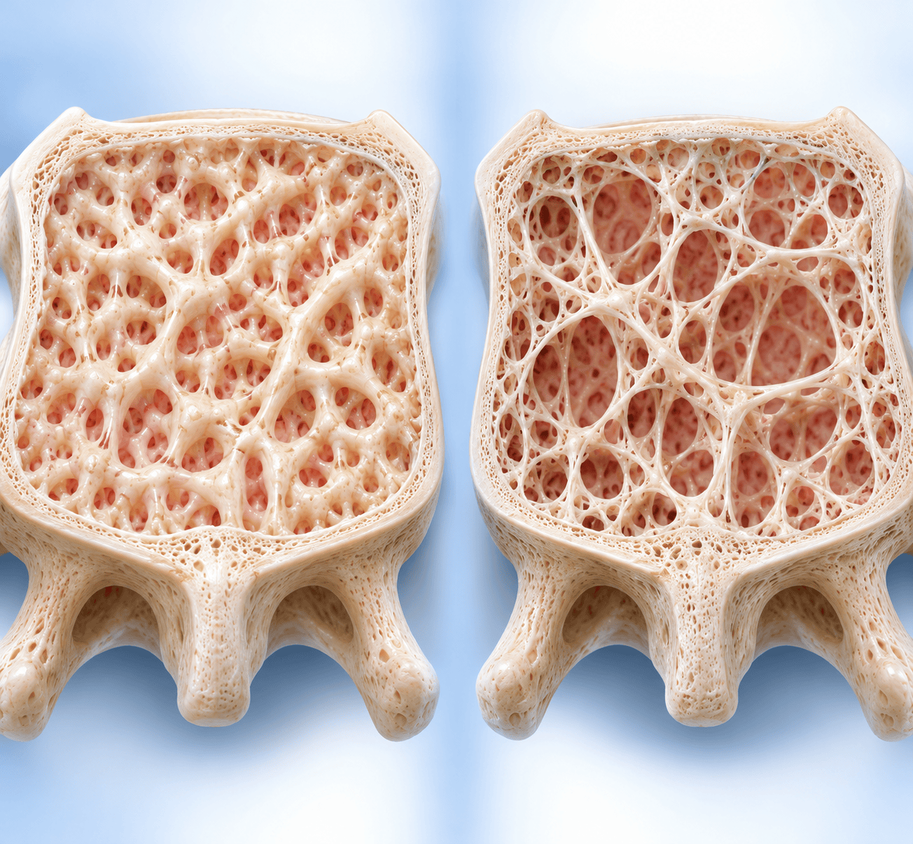
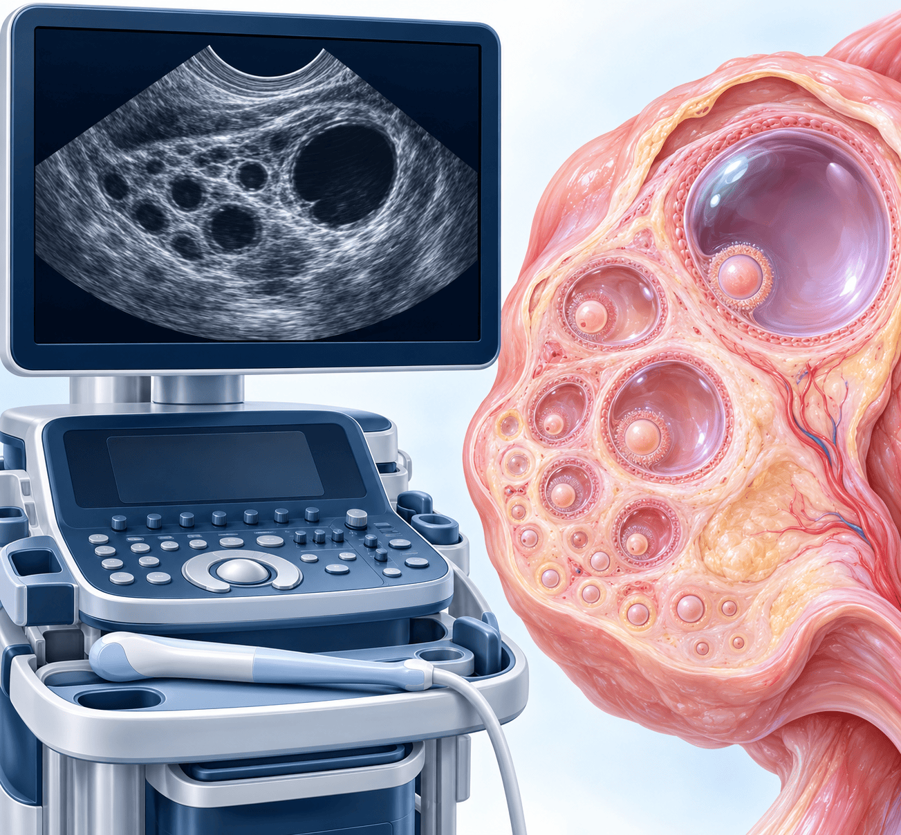

조기난소부전(POI)
진단 개정과 공동 관리
40세 미만 월경 이상에서 FSH 2회 확인부터 호르몬치료·가족 상담까지

CHAPTER 01 · 왜 놓치지 않아야 하나
POI는 40세 이전의 난소 기능 저하
흔하지 않아도 간과하지 않는 이유는 골밀도와 심혈관 건강에 남는 장기 영향이다
3.5%
40세 미만 POI 유병률
의인성이 아닌 POI의 유병률은 예전 연구에서 약 1%, 최근 보고에서 3.5%까지 제시된다.
<40세
난소 활동 소실 기준 연령
40세 이전에 난소 활동이 소실된 상태를 POI로 정의한다. 40~44세에 난소 기능이 멈추면 이른 폐경(early menopause)이다.
골밀도·심혈관
놓치면 남는 장기 영향
40세 이전 난소 기능 저하를 놓치면 골밀도 감소와 심혈관 건강에 장기적 영향이 남는다.
월경 불규칙 환자에서 PCOS·시상하부성 무월경·폐경과 서로 배제하며 접근하는 질환 중 하나다.
CHAPTER 02 · 유병률
여성 100명 중 약 4명이 POI다
연령대별 난소 기능 정지의 구분 — POI·이른 폐경·정상 연령 폐경·늦은 폐경
<40세
조기난소부전(POI)여성 100명 중 약 4명(약 3.5%)
40~44세
이른 폐경(early menopause)여성 100명 중 약 12명
45~54세
정상 연령 폐경(usual age menopause)일반적인 폐경 연령 구간
55세 초과
늦은 폐경(late menopause)여성 100명 중 약 7명 — 55세를 넘겨서까지 월경
연자는 100명 중 약 3.5, 즉 4명 정도가 조기난소부전이라고 설명했다.
CHAPTER 03 · 정의와 용어
용어: POI로 부르고 이른 폐경과 구분한다
POF·조기폐경 대신 POI — 가이드라인이 연구와 진료에서 권고하는 용어
| 용어 | 의미와 사용 |
|---|
POI
(premature ovarian insufficiency) | 40세 이전 난소 활동의 소실(loss of ovarian activity before the age of 40 years)로 정의한다. 가이드라인은 연구·진료에서 이 용어를 쓰도록 권고한다(GPP). |
|---|
| 이전 명칭 | POF(premature ovarian failure), 조기폐경이라고도 불렀으나 최근에는 POI라는 진단명을 많이 사용한다. |
|---|
| 동의어 표기 | primary ovarian insufficiency · premature ovarian failure · 고성선자극호르몬성 무월경 |
|---|
이른 폐경
(early menopause) | 40세 이상 45세 미만(40~44세)에 난소 기능이 멈춘 경우. 45세 미만의 이른 폐경과 40세 미만의 POI는 용어를 혼용하지 않는다. |
|---|
교재의 가이드라인 정의: 40세 이전 난소 활동 소실 = POI, 40세 이상 45세 미만 = 이른 폐경.
CHAPTER 04 · 진단기준
ESHRE 2024 진단기준: FSH를 두 번 확인한다
40세 미만 + 4개월 이상 희발월경·무월경 + 폐경 수준의 FSH 상승
STEP 1
≥4개월
40세 미만 여성에서 희발월경 또는 무월경이 지속
STEP 2 · FSH 검사(1차)
FSH > 25 IU/L
혈청 FSH가 폐경 수준이고 에스트라디올은 낮은 수준
STEP 3 · FSH 재확인
4주 이상 · 2회
간격을 두고 2회째 FSH 상승을 확인한다
POI 진단
40세 미만 여성에서 4개월 이상 지속되는 희발월경 또는 무월경과 함께, 폐경 수준으로 상승한 FSH가 4주 이상 간격을 두고 2회 확인되면 진단한다.
ESHRE 2024 — 연자는 FSH 25 이상인 경우 4주 이상 간격으로 한 번 더 확인하라고 설명했다.
CHAPTER 05 · 진단기준
진단기준과 단독 기준이 아닌 검사
FSH가 표준이며 에스트라디올·AMH·TPO 항체는 진단의 단독 근거로 쓰지 않는다
진단 확정에 쓰는 기준
FSH가 표준 — 40세 미만의 월경 이상과 함께 확인한다
- 월경 이상: 희발월경 또는 무월경이 4개월 이상 지속
- FSH > 25 IU/L: 폐경 수준의 상승
- 재확인: 4주 이상 간격으로 2회째 FSH 상승
단독 진단기준이 아닌 것
진단을 뒷받침하거나 1차 검사로 권고되지 않는 항목
- 저에스트라디올(<50 pg/mL): 진단을 뒷받침하나 단독 진단기준은 아님
- AMH: 난소 기능 검사로 많이 쓰이지만 POI의 1차 진단검사로 권고되지 않음(ESHRE 2024)
- TPO 항체: POI의 진단 검사로 권장하지 않음
AMH를 많이 사용하지만 POI의 1차 검사로 권고되지 않는다 — 연자 설명.
CHAPTER 06 · 감별
40세 미만 무월경: POI와 감별할 질환
임신을 먼저 배제한 뒤 호르몬 소견과 병력으로 구분한다
| 질환 | 호르몬·검사 소견 | 함께 보는 단서 |
|---|
| POI | FSH가 크게 상승하고 에스트라디올은 폐경 이후 수준으로 낮다 | 40세 미만 + 안면홍조 등 폐경 유사 증상, 가족력 확인 |
|---|
| 시상하부성 무월경(FHA) | LH·FSH가 정상 이하(대부분 5 미만) + 저에스트라디올 | 저체중·급격한 체중 감소·고강도 운동·스트레스. 기질적 원인을 모두 배제한 뒤 진단하는 배제 진단 |
|---|
| PCOS | 배란장애·고안드로겐혈증·다낭성 난소 형태 중 2/3 충족 + 다른 원인 배제 | 여드름·다모증·남성형 탈모 등 고안드로겐혈증 징후 |
|---|
| 임신 | β-hCG | 가임기 불규칙 월경에서 가장 먼저 배제 |
|---|
40세 미만 + 폐경 유사 증상이면 FSH를 2회 이상 확인하고 핵형·FMR1·자가면역 검사를 평가한다.
CHAPTER 07 · 진단 적용
진단 적용 예: 검사값이 이어지는 순서
익명화한 강의 증례 — 임신 배제부터 FSH 2회, 원인 검사까지
STEP 1
β-hCG 음성
가임기에서는 가장 먼저 배제한다
STEP 2 · 1차 검사
FSH 42 IU/L
에스트라디올
18 pg/mL(<50)
STEP 3 · 4주 후 재검
FSH 38 IU/L
다시 폐경 수준으로 확인
STEP 4
40세 미만 + 무월경 4개월 이상 + FSH > 25 IU/L 2회
- 6개월간 무월경(직전 1년은 월경 3~4회)
- 안면홍조·야간발한
- 질건조감·성교통 — hypoestrogen 증상
- 핵형 46,XX 정상 · FMR1 premutation 음성
- 21-OH 항체 음성 · 부신 기능·TSH 정상
- 원인 불명 → 특발성 POI로 분류
FSH 재검은 4주 후에 시행했고 두 번 모두 폐경 수준이어서 POI로 진단했다.
CHAPTER 08 · 원인 평가
원인 검사 ①: 의인성 과거력과 유전·염색체
특별한 원인이 없으면 핵형 검사, Turner 증후군이면 Y 염색체까지 확인한다
STEP 1 · 의인성 확인
항암화학요법, 방사선치료, 난소 수술의 과거력이 없는지 확인한다
STEP 2 · 특별한 원인이 없을 때
유전적·염색체적 원인이 없는지 확인한다
STEP 3 · Turner 증후군이면
핵형에서 Turner 증후군이 나오면 Y 염색체의 유무를 FISH 검사로 확인한다
Y 염색체가 있으면
Y 염색체가 확인되면 성선절제술(gonadectomy)을 시행한다
fragile X syndrome을 감별한다. 모든 POI 환자에서 별도로 시행하며 NGS 패널로 대체할 수 없다. 유전 상담 후 시행하고, 보인자로 확인되면 차세대의 지적장애 위험을 알린다.
POI 진단 후에는 어떤 원인으로 POI가 되었는지 감별한다.
CHAPTER 09 · 원인 평가
원인 검사 ②: 자가면역·의인성·원인 불명
21-hydroxylase 항체와 TSH, 치료·수술·감염 과거력을 함께 본다
- 21-hydroxylase 항체(Anti-21OH-Ab)로 자가면역성 POI를 감별
- TSH: 증상이 있을 때, 그리고 5년 간격으로 검사
- TPO 항체는 POI 진단 검사로 권장하지 않음
- 부신 자가항체 — Addison병 동반 여부
- 항암화학요법·방사선치료 과거력
- 난소수술(난소절제술)·골반수술 과거력
- 골반 염증성 질환·감염 여부
- 원인을 찾지 못하면 특발성(idiopathic) POI로 분류
- 원인 규명은 가족 상담·생식력 보존 계획·동반 자가면역질환 관리에 직결
핵심 메시지 — 원인 규명은 가족 상담·생식력 보존 계획·동반 자가면역질환 관리에 직결된다.
CHAPTER 10 · 가족력
가족력이 있으면 유병률이 약 5배
일반 3.5%에서 15%로 — 진단 후 가족 상담이 필요한 이유
막대 길이는 두 수치의 비율(3.5% 대 15%)을 그대로 나타낸 것이다.
약 5배
가족력이 있으면 증가
일반인에서 나타나는 유병률 3.5%가 가족력이 있으면 15%로 약 5배 증가한다.
POI로 진단하면 family history와 함께 상담이 필요하고, 가족(자매)에게 POI 위험 정보를 제공한다.
연자 설명 — 가족력이 있으면 조기난소부전이 발생할 확률이 크게 높아진다.
CHAPTER 11 · 호르몬치료
호르몬치료(HT)는 자연 폐경 연령까지
POI로 진단되면 호르몬치료를 시행하며 기간은 자연 폐경 연령인 50세까지가 원칙이다
POI 진단40세 미만
호르몬치료(HT) 지속 — 에스트로겐 + 프로게스토겐
자연 폐경 연령약 50세
진단 후 호르몬치료를 시행하고, 자연 폐경 연령인 50세까지 지속하는 것이 원칙이다
에스트로겐 + 프로게스토겐 병합으로 호르몬치료를 시행한다. 강의 증례는 에스트라디올 + 주기적 프로게스토겐으로 시작해 자연 폐경 연령까지 지속했다.
안면홍조·야간발한, 질건조감, 성교통 — 에스트로겐이 낮은 상태(hypoestrogen)에서 나타나는 증상을 이미 겪고 있었다.
핵심 메시지 — 호르몬치료(HT)는 자연 폐경 연령까지 지속하는 것이 원칙이다.
CHAPTER 12 · 장기 건강
골밀도와 심혈관 위험을 함께 관리한다
놓치면 장기 영향이 남는 두 축 — DXA·칼슘·비타민 D·심혈관 위험인자

정상 골과 골밀도 감소 골의 비교 모식도
POI 진단 후 DXA를 시행하고 정기적으로 모니터링한다.
골밀도 검사와 함께 칼슘·비타민 D를 보충한다.
심혈관 위험인자를 관리하고 정기적으로 추적한다.
40세 이전의 난소 기능 저하를 놓치면 골밀도 감소와 심혈관 건강에 장기적(long-term) 영향이 나타날 수 있다.
증례의 관리 계획: 골밀도 검사(DXA) 시행, 칼슘·비타민 D 보충, 심혈관 위험인자 관리와 정기 추적.
CHAPTER 13 · 생식력
생식력 상담: 자연임신 가능성은 0%가 아니다
드물게 배란이 일어날 수 있고, 대안과 정서적 지지도 함께 상담한다
POI에서도 아주 드물게 배란이 되는 경우가 있어 자연임신 가능성이 0%라고는 말할 수 없다.
난포를 모니터링하다가 난자가 나오면 그 주기에 임신을 시도할 수 있다.
공여난자 등 대안을 논의하고 생식내분비 전문의에게 의뢰한다. 난자공여 체외수정 등 생식보조술 옵션을 안내한다.
조기 진단에 따른 정서적 충격을 상담하며 심리적 지지를 병행한다.

난포 모니터링 — 초음파로 난소의 난포를 관찰
임신에 대해 완전히 포기할 것인가라는 질문에 연자는 아주 드문 배란 가능성을 설명했다.
CHAPTER 14 · 연자 Q&A
연자 Q&A: 3개월 이상 무월경이면
연수강좌 질의응답에서 연자는 아래와 같이 답했습니다
연자 Q&A
스트레스에 민감한 20대 여성. 기본 검사에서 특이소견이 없고, 약물치료로 배란과 생리 유도는 가능하지만 약 없이는 무월경이 수개월 지속됩니다. 앞으로의 치료계획은?
연수강좌 질의응답에서 연자는 아래와 같이 답했습니다. 표준 진료 권고가 아니라 연자의 답변입니다.
1진단 가능성스트레스로 인한 hypogonadotrophic hypogonadism의 가능성이 높다.
26개월 이상 무월경BMD가 감소하고, 더 진행되면 여성호르몬이 필요한 장기(유방·자궁 등)의 크기 감소와 hypoestrogen 증상이 나타날 수 있다.
33개월 이상 무월경LH, FSH, E2, PRL, TSH 기본 검사와 평가가 반드시 필요하다.
4에스트로겐이 높은 상태로 3개월 이상무월경이 지속되면 자궁내막증식증·암의 위험이 있고, PCOS 가능성도 배제할 수 없어 산부인과 진료가 반드시 필요하다.
무월경이 3개월 이상이면 LH·FSH·E2·PRL·TSH 기본 검사를 시행한다 — 연자 Q&A 답변.
CHAPTER 15 · 공동 관리
공동 관리 체크리스트: 진단 시와 진단 후
내과·산부인과가 함께 챙길 강의의 확인·관리 항목을 한 장에 정리한다
1임신 배제가임기 불규칙 월경에서 β-hCG로 가장 먼저 배제한다.
2월경 이상 확인40세 미만에서 희발월경 또는 무월경이 4개월 이상 지속되는지 본다.
3FSH 2회FSH > 25 IU/L를 4주 이상 간격으로 두 번 확인한다.
4원인 검사과거력, 핵형, FMR1 premutation, 21-OH 항체, TSH를 평가한다.
5호르몬치료에스트로겐 + 프로게스토겐을 자연 폐경 연령(50세)까지 지속한다.
6골밀도·칼슘·비타민 DDXA를 시행하고 칼슘·비타민 D를 보충한다.
7심혈관·TSH 추적심혈관 위험인자를 관리하고 TSH는 증상 시·5년 간격으로 본다.
8가족·생식력·정서가족(자매)에게 위험을 알리고 생식력 상담과 정서적 지지를 병행한다.
TPO 항체는 POI의 진단 검사로 권장하지 않고, AMH는 1차 진단검사가 아니다.
CHAPTER 16 · 핵심 복습
핵심 복습: 진단 이후까지 이어서 본다
POI는 FSH 두 번으로 진단하고, 원인·장기 건강·가족·생식력까지 함께 관리한다
40세 미만 + 희발월경·무월경 4개월 이상 → FSH > 25 IU/L를 4주 이상 간격으로 2회. 에스트라디올 <50 pg/mL는 뒷받침, AMH는 1차 검사가 아니다.
핵형·FMR1·21-OH 항체·TSH로 원인을 평가하고 가족 상담을 한다. 자연 폐경 연령(50세)까지 호르몬치료, DXA·칼슘·비타민 D, 심혈관 위험인자 관리, 생식력 상담을 이어간다.
POI를 놓치면 골밀도 감소와 심혈관 건강에 장기적 영향이 남는다.